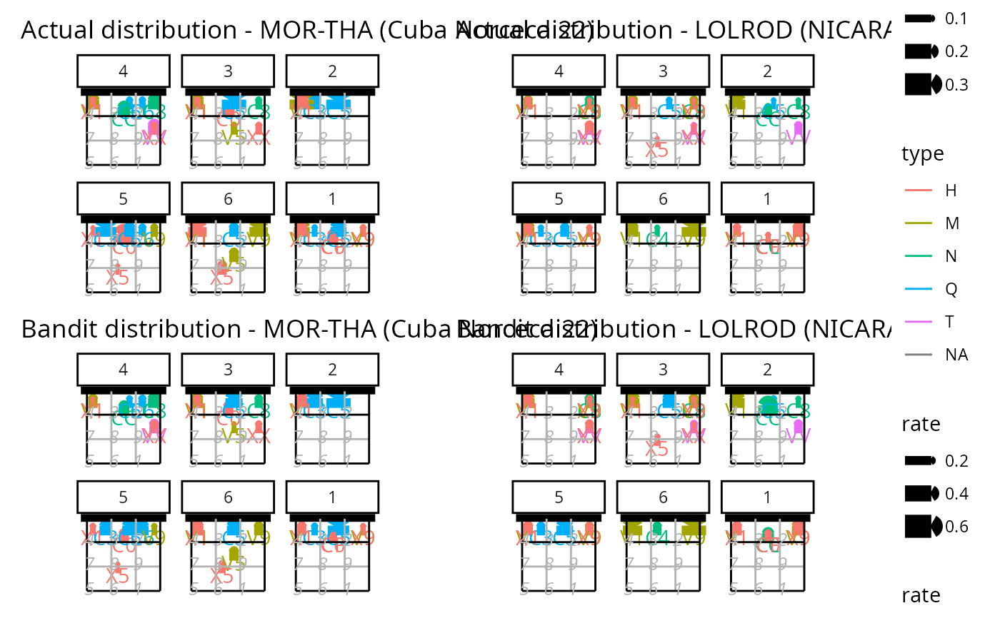

Court plot of a real and simulated setter distribution
Source:R/setter_choice_functions.R
ov_plot_distribution.RdCourt plot of a real and simulated setter distribution
Usage
ov_plot_distribution(
ssd,
label_setters_by = "id",
font_size = 11,
title_wrap = NA,
output = "plot"
)Arguments
- ssd
simulated setter distribution output as returned by
ov_simulate_setter_distribution()- label_setters_by
string: either "id" or "name"
- font_size
numeric: font size
- title_wrap
numeric: if non-
NA, usestrwrap()to break the title into lines of this width- output
string: either "plot" or "list"
Examples
dvw <- ovdata_example("NCA-CUB")
setter <- ov_simulate_setter_distribution(dvw = dvw, play_phase = c("Reception", "Transition"),
n_sim = 100, attack_by = "code")
ov_plot_distribution(setter)
#> Warning: Removed 2 rows containing missing values or values outside the scale range
#> (`geom_segment()`).
#> Warning: Removed 2 rows containing missing values or values outside the scale range
#> (`geom_text()`).
#> Warning: Removed 2 rows containing missing values or values outside the scale range
#> (`geom_segment()`).
#> Warning: Removed 2 rows containing missing values or values outside the scale range
#> (`geom_text()`).
